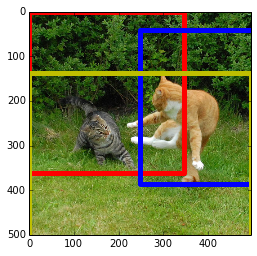

Caffe
Convolutional Architecture for Fast Feature Embedding
Maintained by
BVLC
Created by
Yangqing Jia
Running Windowed Detection with Caffe
View this page as an IPython Notebook (highly recommended!)
This approach follows ideas described in Ross Girshick, Jeff Donahue, Trevor Darrell, Jitendra Malik. Rich feature hierarchies for accurate object detection and semantic segmentation. Arxiv 2013.
First of all, we’ll need a little Python script to run the Matlab Selective Search code.
Let’s run detection on an image of a couple of cats frolicking (one of the ImageNet detection challenge pictures), which we will download from the web. You’ll need a prototxt specifying the network, and a trained model.
We will use models/imagenet.prototxt and the caffe_reference_imagenet_model which you can download by models/get_caffe_reference_imagenet_model.sh. The learned model should be at models/caffe_reference_imagenet_model.
!mkdir _temp
!curl http://farm1.static.flickr.com/220/512450093_7717fb8ce8.jpg > _temp/cat.jpg
!echo `pwd`/_temp/cat.jpg > _temp/cat.txt
!python ../python/caffe/detection/detector.py --crop_mode=selective_search --pretrained_model=../models/caffe_reference_imagenet_model --model_def=../models/imagenet.prototxt _temp/cat.txt _temp/cat.h5
Loading Caffe model.
WARNING: Logging before InitGoogleLogging() is written to STDERR
I0213 01:19:34.836383 1959801216 net.cpp:66] Creating Layer conv1
I0213 01:19:34.836407 1959801216 net.cpp:76] conv1 <- data
I0213 01:19:34.836422 1959801216 net.cpp:101] conv1 -> conv1
I0213 01:19:36.050011 1959801216 net.cpp:116] Top shape: 96 55 55
I0213 01:19:36.050045 1959801216 net.cpp:133] conv1 needs backward computation.
I0213 01:19:36.050055 1959801216 net.cpp:66] Creating Layer relu1
I0213 01:19:36.050060 1959801216 net.cpp:76] relu1 <- conv1
I0213 01:19:36.050066 1959801216 net.cpp:90] relu1 -> conv1 (in-place)
I0213 01:19:36.050075 1959801216 net.cpp:116] Top shape: 96 55 55
I0213 01:19:36.050079 1959801216 net.cpp:133] relu1 needs backward computation.
I0213 01:19:36.050084 1959801216 net.cpp:66] Creating Layer pool1
I0213 01:19:36.050088 1959801216 net.cpp:76] pool1 <- conv1
I0213 01:19:36.050093 1959801216 net.cpp:101] pool1 -> pool1
I0213 01:19:36.050101 1959801216 net.cpp:116] Top shape: 96 27 27
I0213 01:19:36.050107 1959801216 net.cpp:133] pool1 needs backward computation.
I0213 01:19:36.050111 1959801216 net.cpp:66] Creating Layer norm1
I0213 01:19:36.050115 1959801216 net.cpp:76] norm1 <- pool1
I0213 01:19:36.050119 1959801216 net.cpp:101] norm1 -> norm1
I0213 01:19:36.050127 1959801216 net.cpp:116] Top shape: 96 27 27
I0213 01:19:36.050132 1959801216 net.cpp:133] norm1 needs backward computation.
I0213 01:19:36.050137 1959801216 net.cpp:66] Creating Layer pad2
I0213 01:19:36.050142 1959801216 net.cpp:76] pad2 <- norm1
I0213 01:19:36.050145 1959801216 net.cpp:101] pad2 -> pad2
I0213 01:19:36.050151 1959801216 net.cpp:116] Top shape: 96 31 31
I0213 01:19:36.050155 1959801216 net.cpp:133] pad2 needs backward computation.
I0213 01:19:36.050170 1959801216 net.cpp:66] Creating Layer conv2
I0213 01:19:36.050174 1959801216 net.cpp:76] conv2 <- pad2
I0213 01:19:36.050375 1959801216 net.cpp:101] conv2 -> conv2
I0213 01:19:36.052516 1959801216 net.cpp:116] Top shape: 256 27 27
I0213 01:19:36.052526 1959801216 net.cpp:133] conv2 needs backward computation.
I0213 01:19:36.052533 1959801216 net.cpp:66] Creating Layer relu2
I0213 01:19:36.052538 1959801216 net.cpp:76] relu2 <- conv2
I0213 01:19:36.052543 1959801216 net.cpp:90] relu2 -> conv2 (in-place)
I0213 01:19:36.052548 1959801216 net.cpp:116] Top shape: 256 27 27
I0213 01:19:36.052552 1959801216 net.cpp:133] relu2 needs backward computation.
I0213 01:19:36.052557 1959801216 net.cpp:66] Creating Layer pool2
I0213 01:19:36.052561 1959801216 net.cpp:76] pool2 <- conv2
I0213 01:19:36.052567 1959801216 net.cpp:101] pool2 -> pool2
I0213 01:19:36.052572 1959801216 net.cpp:116] Top shape: 256 13 13
I0213 01:19:36.052577 1959801216 net.cpp:133] pool2 needs backward computation.
I0213 01:19:36.052583 1959801216 net.cpp:66] Creating Layer norm2
I0213 01:19:36.052587 1959801216 net.cpp:76] norm2 <- pool2
I0213 01:19:36.052592 1959801216 net.cpp:101] norm2 -> norm2
I0213 01:19:36.052597 1959801216 net.cpp:116] Top shape: 256 13 13
I0213 01:19:36.052602 1959801216 net.cpp:133] norm2 needs backward computation.
I0213 01:19:36.052608 1959801216 net.cpp:66] Creating Layer pad3
I0213 01:19:36.052613 1959801216 net.cpp:76] pad3 <- norm2
I0213 01:19:36.052618 1959801216 net.cpp:101] pad3 -> pad3
I0213 01:19:36.052623 1959801216 net.cpp:116] Top shape: 256 15 15
I0213 01:19:36.052628 1959801216 net.cpp:133] pad3 needs backward computation.
I0213 01:19:36.052633 1959801216 net.cpp:66] Creating Layer conv3
I0213 01:19:36.052636 1959801216 net.cpp:76] conv3 <- pad3
I0213 01:19:36.052641 1959801216 net.cpp:101] conv3 -> conv3
I0213 01:19:36.058481 1959801216 net.cpp:116] Top shape: 384 13 13
I0213 01:19:36.058501 1959801216 net.cpp:133] conv3 needs backward computation.
I0213 01:19:36.058508 1959801216 net.cpp:66] Creating Layer relu3
I0213 01:19:36.058513 1959801216 net.cpp:76] relu3 <- conv3
I0213 01:19:36.058521 1959801216 net.cpp:90] relu3 -> conv3 (in-place)
I0213 01:19:36.058526 1959801216 net.cpp:116] Top shape: 384 13 13
I0213 01:19:36.058529 1959801216 net.cpp:133] relu3 needs backward computation.
I0213 01:19:36.058534 1959801216 net.cpp:66] Creating Layer pad4
I0213 01:19:36.058538 1959801216 net.cpp:76] pad4 <- conv3
I0213 01:19:36.058543 1959801216 net.cpp:101] pad4 -> pad4
I0213 01:19:36.058554 1959801216 net.cpp:116] Top shape: 384 15 15
I0213 01:19:36.058559 1959801216 net.cpp:133] pad4 needs backward computation.
I0213 01:19:36.058564 1959801216 net.cpp:66] Creating Layer conv4
I0213 01:19:36.058568 1959801216 net.cpp:76] conv4 <- pad4
I0213 01:19:36.058573 1959801216 net.cpp:101] conv4 -> conv4
I0213 01:19:36.063360 1959801216 net.cpp:116] Top shape: 384 13 13
I0213 01:19:36.063379 1959801216 net.cpp:133] conv4 needs backward computation.
I0213 01:19:36.063385 1959801216 net.cpp:66] Creating Layer relu4
I0213 01:19:36.063391 1959801216 net.cpp:76] relu4 <- conv4
I0213 01:19:36.063397 1959801216 net.cpp:90] relu4 -> conv4 (in-place)
I0213 01:19:36.063402 1959801216 net.cpp:116] Top shape: 384 13 13
I0213 01:19:36.063406 1959801216 net.cpp:133] relu4 needs backward computation.
I0213 01:19:36.063411 1959801216 net.cpp:66] Creating Layer pad5
I0213 01:19:36.063416 1959801216 net.cpp:76] pad5 <- conv4
I0213 01:19:36.063421 1959801216 net.cpp:101] pad5 -> pad5
I0213 01:19:36.063426 1959801216 net.cpp:116] Top shape: 384 15 15
I0213 01:19:36.063431 1959801216 net.cpp:133] pad5 needs backward computation.
I0213 01:19:36.063441 1959801216 net.cpp:66] Creating Layer conv5
I0213 01:19:36.063444 1959801216 net.cpp:76] conv5 <- pad5
I0213 01:19:36.063449 1959801216 net.cpp:101] conv5 -> conv5
I0213 01:19:36.066474 1959801216 net.cpp:116] Top shape: 256 13 13
I0213 01:19:36.066490 1959801216 net.cpp:133] conv5 needs backward computation.
I0213 01:19:36.066496 1959801216 net.cpp:66] Creating Layer relu5
I0213 01:19:36.066501 1959801216 net.cpp:76] relu5 <- conv5
I0213 01:19:36.066508 1959801216 net.cpp:90] relu5 -> conv5 (in-place)
I0213 01:19:36.066512 1959801216 net.cpp:116] Top shape: 256 13 13
I0213 01:19:36.066516 1959801216 net.cpp:133] relu5 needs backward computation.
I0213 01:19:36.066520 1959801216 net.cpp:66] Creating Layer pool5
I0213 01:19:36.066525 1959801216 net.cpp:76] pool5 <- conv5
I0213 01:19:36.066529 1959801216 net.cpp:101] pool5 -> pool5
I0213 01:19:36.066535 1959801216 net.cpp:116] Top shape: 256 6 6
I0213 01:19:36.066540 1959801216 net.cpp:133] pool5 needs backward computation.
I0213 01:19:36.066545 1959801216 net.cpp:66] Creating Layer fc6
I0213 01:19:36.066550 1959801216 net.cpp:76] fc6 <- pool5
I0213 01:19:36.066558 1959801216 net.cpp:101] fc6 -> fc6
I0213 01:19:36.333488 1959801216 net.cpp:116] Top shape: 4096 1 1
I0213 01:19:36.333513 1959801216 net.cpp:133] fc6 needs backward computation.
I0213 01:19:36.333521 1959801216 net.cpp:66] Creating Layer relu6
I0213 01:19:36.333528 1959801216 net.cpp:76] relu6 <- fc6
I0213 01:19:36.333535 1959801216 net.cpp:90] relu6 -> fc6 (in-place)
I0213 01:19:36.333541 1959801216 net.cpp:116] Top shape: 4096 1 1
I0213 01:19:36.333546 1959801216 net.cpp:133] relu6 needs backward computation.
I0213 01:19:36.333551 1959801216 net.cpp:66] Creating Layer drop6
I0213 01:19:36.333556 1959801216 net.cpp:76] drop6 <- fc6
I0213 01:19:36.333560 1959801216 net.cpp:90] drop6 -> fc6 (in-place)
I0213 01:19:36.333566 1959801216 net.cpp:116] Top shape: 4096 1 1
I0213 01:19:36.333570 1959801216 net.cpp:133] drop6 needs backward computation.
I0213 01:19:36.333575 1959801216 net.cpp:66] Creating Layer fc7
I0213 01:19:36.333580 1959801216 net.cpp:76] fc7 <- fc6
I0213 01:19:36.333585 1959801216 net.cpp:101] fc7 -> fc7
I0213 01:19:36.450057 1959801216 net.cpp:116] Top shape: 4096 1 1
I0213 01:19:36.450075 1959801216 net.cpp:133] fc7 needs backward computation.
I0213 01:19:36.450083 1959801216 net.cpp:66] Creating Layer relu7
I0213 01:19:36.450089 1959801216 net.cpp:76] relu7 <- fc7
I0213 01:19:36.450095 1959801216 net.cpp:90] relu7 -> fc7 (in-place)
I0213 01:19:36.450101 1959801216 net.cpp:116] Top shape: 4096 1 1
I0213 01:19:36.450105 1959801216 net.cpp:133] relu7 needs backward computation.
I0213 01:19:36.450114 1959801216 net.cpp:66] Creating Layer drop7
I0213 01:19:36.450117 1959801216 net.cpp:76] drop7 <- fc7
I0213 01:19:36.450121 1959801216 net.cpp:90] drop7 -> fc7 (in-place)
I0213 01:19:36.450127 1959801216 net.cpp:116] Top shape: 4096 1 1
I0213 01:19:36.450131 1959801216 net.cpp:133] drop7 needs backward computation.
I0213 01:19:36.450136 1959801216 net.cpp:66] Creating Layer fc8
I0213 01:19:36.450140 1959801216 net.cpp:76] fc8 <- fc7
I0213 01:19:36.450145 1959801216 net.cpp:101] fc8 -> fc8
I0213 01:19:36.478497 1959801216 net.cpp:116] Top shape: 1000 1 1
I0213 01:19:36.478538 1959801216 net.cpp:133] fc8 needs backward computation.
I0213 01:19:36.478549 1959801216 net.cpp:66] Creating Layer prob
I0213 01:19:36.478555 1959801216 net.cpp:76] prob <- fc8
I0213 01:19:36.478567 1959801216 net.cpp:101] prob -> prob
I0213 01:19:36.478581 1959801216 net.cpp:116] Top shape: 1000 1 1
I0213 01:19:36.478585 1959801216 net.cpp:133] prob needs backward computation.
I0213 01:19:36.478590 1959801216 net.cpp:144] This network produces output prob
I0213 01:19:36.478602 1959801216 net.cpp:154] Collecting Learning Rate and Weight Decay.
I0213 01:19:36.478628 1959801216 net.cpp:148] Network initialization done.
Caffe model loaded in 2.581 s
Loading input and assembling batches...
selective_search({'/Users/karayev/work/caffe-bvlc/examples/_temp/cat.jpg'}, '/var/folders/4q/vm1lt3t91p9gl06nz6s1dzzw0000gn/T/tmpt2_xYx.mat')
23 batches assembled in 3.691 s
Processing 1 files in 23 batches
...on batch 0/23, elapsed time: 0.000 s
...on batch 10/23, elapsed time: 2.928 s
...on batch 20/23, elapsed time: 5.803 s
Processing complete after 6.722 s.
/usr/local/Cellar/python/2.7.6/Frameworks/Python.framework/Versions/2.7/lib/python2.7/site-packages/pandas/io/pytables.py:2446: PerformanceWarning:
your performance may suffer as PyTables will pickle object types that it cannot
map directly to c-types [inferred_type->mixed,key->block1_values] [items->['feat']]
warnings.warn(ws, PerformanceWarning)
Done. Saving to _temp/cat.h5 took 0.066 s.Running this outputs a DataFrame with the filenames, selected windows, and their ImageNet scores to an HDF5 file. (We only ran on one image, so the filenames will all be the same.)
import pandas as pd
df = pd.read_hdf('_temp/cat.h5', 'df')
print(df.shape)
print(df.iloc[0])
(223, 5)
feat [6.90396e-06, 1.27811e-06, 1.82159e-06, 1.1020...
ymin 0
xmin 0
ymax 500
xmax 496
Name: /Users/karayev/work/caffe-bvlc/examples/_temp/cat.jpg, dtype: objectIn general, detector.py is most efficient when running on a lot of images: it first extracts window proposals for all of them, batches the windows for efficient GPU processing, and then outputs the results. Simply list an image per line in the images_file, and it will process all of them.
Although this guide gives an example of ImageNet detection, detector.py is clever enough to adapt to different Caffe models’ input dimensions, batch size, and output categories. Refer to python detector.py --help and the images_dim and images_mean_file parameters to describe your data set. No need for hardcoding.
Anyway, let’s now load ImageNet class names and make a DataFrame of the features. Note you’ll need the auxiliary ilsvrc2012 data fetched by data/ilsvrc12/get_ilsvrc12_aux.sh.
with open('../data/ilsvrc12/synset_words.txt') as f:
labels_df = pd.DataFrame([
{
'synset_id': l.strip().split(' ')[0],
'name': ' '.join(l.strip().split(' ')[1:]).split(',')[0]
}
for l in f.readlines()
])
labels_df.sort('synset_id')
feats_df = pd.DataFrame(np.vstack(df.feat.values), columns=labels_df['name'])
print(feats_df.iloc[0])
name
tench 0.000007
goldfish 0.000001
great white shark 0.000002
tiger shark 0.000001
hammerhead 0.000007
electric ray 0.000004
stingray 0.000007
cock 0.000060
hen 0.003055
ostrich 0.000010
brambling 0.000004
goldfinch 0.000001
house finch 0.000004
junco 0.000002
indigo bunting 0.000001
...
daisy 0.000002
yellow lady's slipper 0.000002
corn 0.000020
acorn 0.000011
hip 0.000003
buckeye 0.000010
coral fungus 0.000005
agaric 0.000019
gyromitra 0.000039
stinkhorn 0.000002
earthstar 0.000025
hen-of-the-woods 0.000035
bolete 0.000037
ear 0.000008
toilet tissue 0.000019
Name: 0, Length: 1000, dtype: float32Let’s look at the activations.
gray()
matshow(feats_df.values)
xlabel('Classes')
ylabel('Windows')
<matplotlib.text.Text at 0x107290150>
<matplotlib.figure.Figure at 0x106877510>
Now let’s take max across all windows and plot the top classes.
max_s = feats_df.max(0)
max_s.sort(ascending=False)
print(max_s[:10])
name
proboscis monkey 0.923392
tiger cat 0.918685
milk can 0.783663
American black bear 0.637560
broccoli 0.612832
tiger 0.515798
platypus 0.514660
dhole 0.509583
lion 0.496187
dingo 0.482885
dtype: float32Okay, there are indeed cats in there (and some nonsense). Picking good localizations is work in progress; manually, we see that the third and thirteenth top detections correspond to the two cats.
# Find, print, and display max detection.
window_order = pd.Series(feats_df.values.max(1)).order(ascending=False)
i = window_order.index[3]
j = window_order.index[13]
# Show top predictions for top detection.
f = pd.Series(df['feat'].iloc[i], index=labels_df['name'])
print('Top detection:')
print(f.order(ascending=False)[:5])
print('')
# Show top predictions for 10th top detection.
f = pd.Series(df['feat'].iloc[j], index=labels_df['name'])
print('10th detection:')
print(f.order(ascending=False)[:5])
# Show top detection in red, 10th top detection in blue.
im = imread('_temp/cat.jpg')
imshow(im)
currentAxis = plt.gca()
det = df.iloc[i]
coords = (det['xmin'], det['ymin']), det['xmax'] - det['xmin'], det['ymax'] - det['ymin']
currentAxis.add_patch(Rectangle(*coords, fill=False, edgecolor='r', linewidth=5))
det = df.iloc[j]
coords = (det['xmin'], det['ymin']), det['xmax'] - det['xmin'], det['ymax'] - det['ymin']
currentAxis.add_patch(Rectangle(*coords, fill=False, edgecolor='b', linewidth=5))
Top detection:
name
tiger cat 0.882021
tiger 0.075015
tabby 0.024404
lynx 0.012947
Egyptian cat 0.004409
dtype: float32
10th detection:
name
tiger cat 0.681169
Pembroke 0.063924
dingo 0.050501
golden retriever 0.027614
tabby 0.021413
dtype: float32
<matplotlib.patches.Rectangle at 0x108516c90>
That’s cool. Both of these detections are tiger cats. Let’s take all ‘tiger cat’ detections and NMS them to get rid of overlapping windows.
def nms_detections(dets, overlap=0.5):
"""
Non-maximum suppression: Greedily select high-scoring detections and
skip detections that are significantly covered by a previously
selected detection.
This version is translated from Matlab code by Tomasz Malisiewicz,
who sped up Pedro Felzenszwalb's code.
Parameters dets: ndarray
each row is ['xmin', 'ymin', 'xmax', 'ymax', 'score']
overlap: float
minimum overlap ratio (0.5 default)
Output dets: ndarray
remaining after suppression.
"""
if np.shape(dets)[0] < 1:
return dets
x1 = dets[:, 0]
y1 = dets[:, 1]
x2 = dets[:, 2]
y2 = dets[:, 3]
w = x2 - x1
h = y2 - y1
area = w * h
s = dets[:, 4]
ind = np.argsort(s)
pick = []
counter = 0
while len(ind) > 0:
last = len(ind) - 1
i = ind[last]
pick.append(i)
counter += 1
xx1 = np.maximum(x1[i], x1[ind[:last]])
yy1 = np.maximum(y1[i], y1[ind[:last]])
xx2 = np.minimum(x2[i], x2[ind[:last]])
yy2 = np.minimum(y2[i], y2[ind[:last]])
w = np.maximum(0., xx2 - xx1 + 1)
h = np.maximum(0., yy2 - yy1 + 1)
o = w * h / area[ind[:last]]
to_delete = np.concatenate(
(np.nonzero(o > overlap)[0], np.array([last])))
ind = np.delete(ind, to_delete)
return dets[pick, :]
scores = feats_df['tiger cat']
windows = df[['xmin', 'ymin', 'xmax', 'ymax']].values
dets = np.hstack((windows, scores[:, np.newaxis]))
nms_dets = nms_detections(dets)Show top 3 NMS’d detections for ‘tiger cat’ in the image.
imshow(im)
currentAxis = plt.gca()
colors = ['r', 'b', 'y']
for c, det in zip(colors, nms_dets[:3]):
currentAxis.add_patch(
Rectangle((det[0], det[1]), det[2], det[3],
fill=False, edgecolor=c, linewidth=5)
)
Remove the temp directory to clean up.
import shutil
shutil.rmtree('_temp')